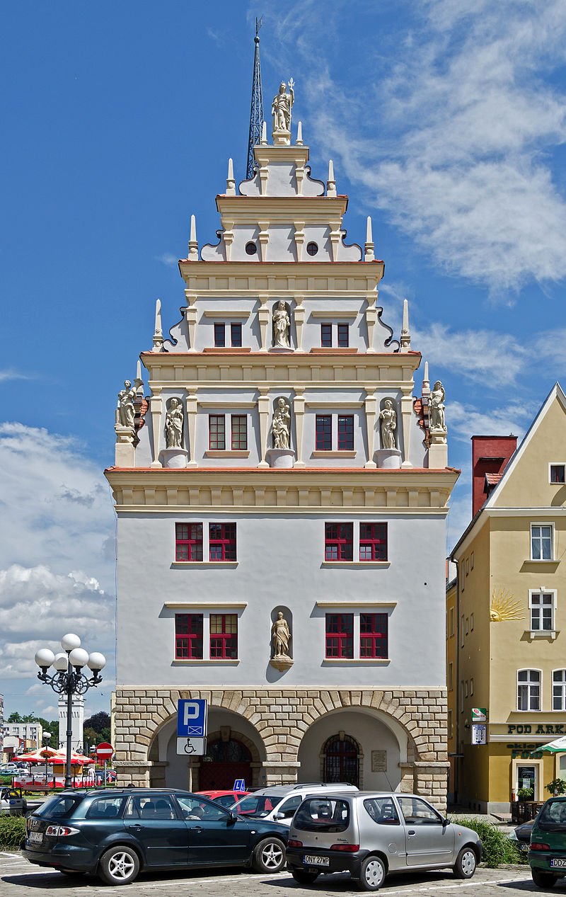

Dom Wagi Miejskiej
 Dom Wagi został zbudowany z inicjatywy biskupa Jana Stischa w 1604 roku. Jego nazwa nawiązuje do znajdującej się w przyziemiu wagi, która służyła do egzekwowania opłaty z tytułu prawa wagowego. W dużym uproszczeniu można powiedzieć, że wszystkie towary przywożone do Nysy musiały być zważone i zmierzone by pobrać od nich opłatę celną. Pierwsze wzmianki o takich opłatach pojawiły się już w XI wieku. Opłaty te zwane mytem pobierane były przez Bolesława Śmiałego w komorze celnej na Bugu. W połowie XIV wieku zamiast nazwy myto pojawiła się pochodząca z języka greckiego thelonem oraz cło.